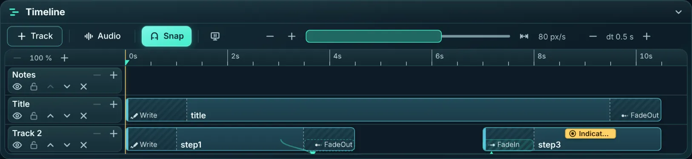
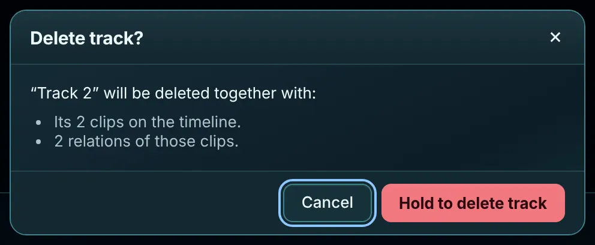
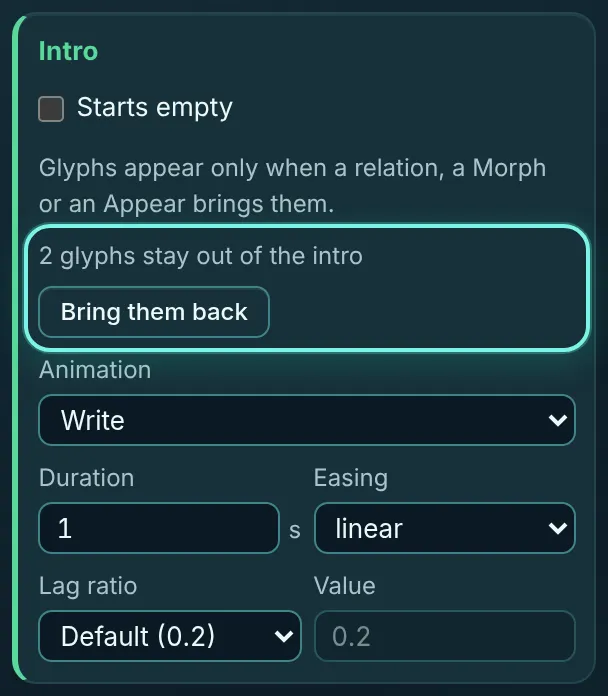
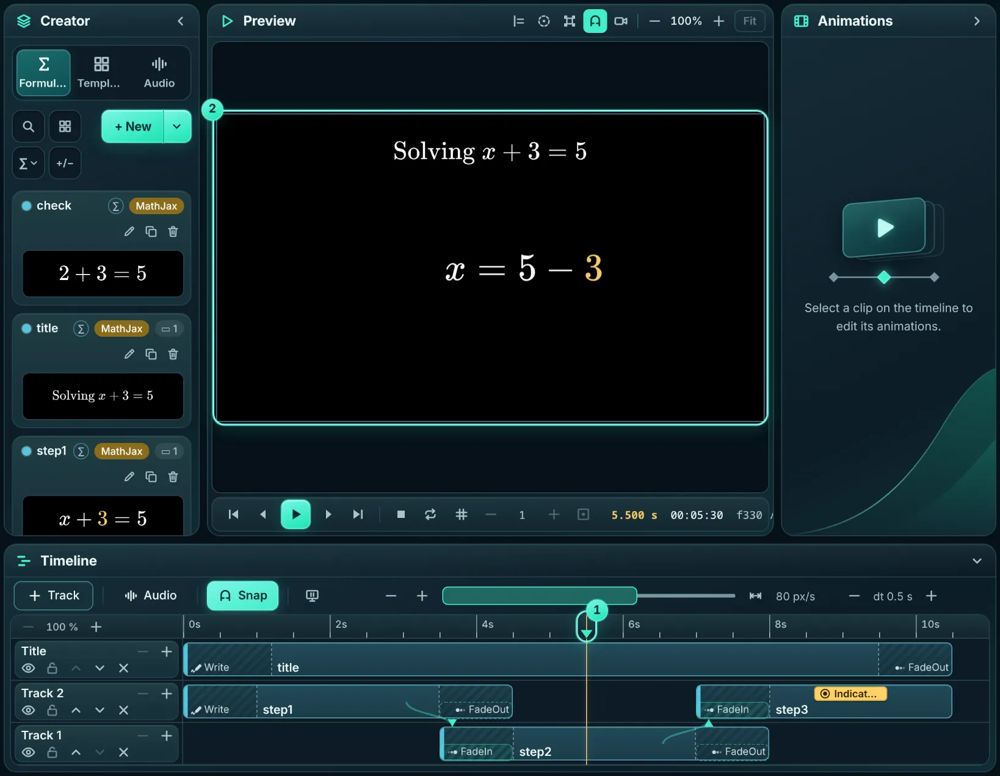
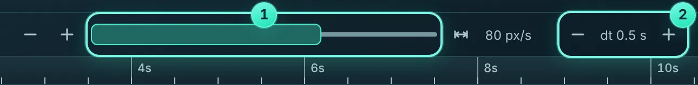
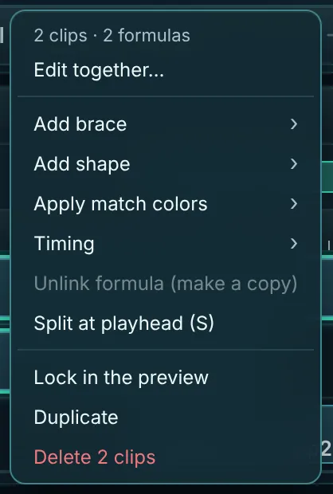

Working with the timeline
The timeline says when each formula is on screen. Here you learn its parts, how to put clips on it, move them and cut them in two, how to zoom and snap, and how to get around it with the mouse and the keyboard.
The timeline is a set of tracks, one under another. On a track you put clips: a clip is the time during which an object (a formula, a text, a brace, a shape or a line) is on screen. A ruler counts the seconds along the top, and the playhead marks the instant the Preview shows.
The parts of the timeline
The rest of the page takes the parts one by one. You can follow it on the project above,
timeline-basics, which the last section offers for download.
Tracks
A track is a row of the timeline. The clips of a track never overlap, so two things that are on screen together are on two tracks. Tracks are layers: the one on top is drawn in front of the ones below it. A new project starts with two, Track 2 over Track 1.
Press + Track, on the left of the toolbar, to add a track. It goes on top, in front of the others, and takes the next free number as its name.

Notes.A name is changed by double-clicking it, or by pressing Enter or F2 on it once Tab has brought the focus there. Enter keeps the new name and Esc keeps the old one.
The buttons of a track
- Hide (the eye) hides the track in the Preview, so that you see what is behind it. It is a view only: a hidden track is still exported, in the Python and in the video; the Python export lists it among its issues.
- Lock (the padlock) protects the track. Its clips can be selected, but nothing changes them: they cannot be moved, trimmed or deleted, the Animations panel shows them read-only, and nothing can be dropped on the track. Unlock it to work on them again.
- Up and down (the arrows) move the track towards the front or towards the back. The up arrow of the track on top and the down arrow of the one at the bottom are off.
- Delete (the cross) deletes the track with its clips. A dialog lists what goes with it, clips, the objects attached to them and their relations, and its red button has to be held down until it fills, so that nobody deletes a track by accident. One undo step brings everything back.

Track heights
A track grows by itself when its clips have animation blocks that run at the same time: each one gets a lane. You can also change heights to read better.
- The − and + beside a track's name make that track alone lower or taller, down to the standard height and up to four times it. Dragging the top or bottom edge of its header does the same: the track an edge resizes lights up as the pointer reaches it, a double-click gives the track the height of the others again, and Esc during the drag puts it back.
- The keys in the corner over the headers, − 100 % +, change every track at once, from the standard height to three times it. The percentage in the middle puts them all back.
Heights are a view of the timeline, like its zoom: the project does not store them.
What goes on which track
Formulas, texts, braces, shapes and lines go on the ordinary tracks, the ones + Track adds. Recordings go on audio tracks, which the Audio button next to it adds (see Audio). A clip never moves onto a track of the other kind.
Clips
A clip is the time an object is on screen: it starts at one time, ends at another and lives on one track. A formula can have many clips. It is still one object, so editing it changes all of them (to give one clip a formula of its own, see Unlinking a formula).
Putting a formula on the timeline
Drag the card of a formula from the Creator onto a track. A dashed ghost shows where the clip would go: it is 3 seconds long, its start snaps to the ticks, and if that place is taken it moves to the nearest free time. Drop it and the clip is made and selected.
check dragged onto Track 1.
The ghost fills the free time before step2; dropped, it is a clip of 3 s.Without dragging, choose Add to the timeline in the formula's menu (right-click its card), or press the same button in the Animations panel when the formula is not on the timeline yet. The clip goes on the first track that is not locked, at the playhead. What a new clip starts with is the subject of Appearing and disappearing.
What a clip shows
A clip wears the tag colour of its formula as a stripe on its left edge, and its name, with the tag's icon when it has one. In its lower corners it names its intro, on the left, and its outro, on the right; both are hatched. Rest the pointer on a clip for a moment and a tooltip shows its formula and its times. Double-click a clip to edit its formula; right-click it for its menu.
Moving a clip
Drag a clip. Sideways changes its time; up or down puts it on another track. Clips never overlap on a track, so a clip stops at the nearest free place instead of going over a neighbour. It never starts before 0, and it never goes onto a locked track or an audio track. Nor does it leave out the window of a relation whose other clip is on a locked track (below). Several selected clips move together, and Esc during the drag puts everything back.
step3 to the left, with the playhead at 5.75 s: it moves in
jumps of dt, sticks to the playhead and follows the pointer freely while
Shift is held.Resizing a clip
Drag the left or the right edge of a clip to change when it starts or when it ends. The clip stops at the next clip of its track, and it is never shorter than its intro and its outro together, nor than a tenth of a second, and it stops where the window of a relation with a clip on a locked track would no longer fit in it. Trimming the start does not move what the clip shows: its animation blocks stay at their times, and one that no longer fits inside the clip is shortened or removed.
step1 dragged to the right: the clip grows until it
meets step3.Several clips at once. With several clips selected (Ctrl-click them, or drag a box over them), drag an edge of one of them: the same edge of every selected clip moves with it, by the same time, each from where it is. Sounds are trimmed along with the clips of the scene. The clips go as far as all of them allow: when one of them meets the next clip of its track, its shortest length, the end of its recording or the window of a relation with a clip on a locked track, they all stop. The edge you hold is the one that snaps. An edge of a clip that is not selected still trims that clip alone, and the edges of an intro or an outro are always one clip's.
Splitting a clip
To cut a clip in two, put the playhead where the cut goes, click the clip to select it and press S. The clip's menu has Split at playhead (S) too, on the timeline and in the Preview, and so has the menu of several selected clips, which splits those the playhead is inside. The clip becomes two clips that touch at the playhead.
step2 split at 5.5 s. The second half is a clip of
step2_s, and the arrow to step3 now leaves from it.
Ctrl+Z undoes the split in one step.The first half is still a clip of its formula, and keeps the intro. The
second half is a clip of a copy of the formula: a new
formula in the Creator, named after it with a suffix, step2_s here, or
step2_s1, step2_s2… when that name is taken. From then on the two
are separate formulas: editing one no longer changes the other.
Preferences ▸ Split suffix… changes the suffix (see
Preferences).
The second half has no intro: it starts exactly as the object is at that instant, with its place, size, turn, colours and opacity, and with the glyphs that are on screen then. The copy hides the other glyphs; a block or a relation after the cut still brings them in. The outro goes with the second half.
The glyphs that have not come on screen yet at the cut, and that an Appear block, a relation or a Morph block brings in after it, stay out of the first half too. What brings them goes with the second half, so the first half leaves them out of its intro itself, and up to the cut it shows what the whole clip showed. Its Timing tab says how many, under Starts empty: 2 glyphs stay out of the intro. Bring them back (Bring it back for one glyph) gives them to its intro again, in one undo step (Appearing and disappearing). If nothing of the clip was on screen before the cut, the first half shows nothing, and its panel says so under Warnings: … this clip never shows. Delete that half, or trim the clip.

a + b = c whose = c an Appear block brings
at 2 s, split at 1.8 s: the Intro section of its first half.What lies whole on one side of the cut goes with its half: the animation blocks, the relations (one whose window comes after the cut now leaves from, or arrives at, the second half) and the objects attached to the clip. A brace, a shape or a line is split the same way: its second half is another object, equal to it. The split is one undo step, and both halves are left selected. A sound selected with the clips is cut at the playhead too, in the same step (Audio).
When the clip stays whole. The split is refused, and a notice names the reason, when one of the following holds. With several clips selected, the others are split, and one notice lists each clip that stayed whole with its reason.
- something crosses the playhead: an intro or an outro still running, an animation block, the window of a relation, or the clip of an object attached to this one. Move the playhead off it. For an attached object, you can also select its clip: S then splits both.
- the second half could not start as the object is then: glyphs that a Transform block moved or made fainter (a colour it gave them is kept), a shape that a Transform carried to other glyphs, a line whose ends a Transform moved, or an attached object whose target has moved since it was placed, or that a Transform of its own moved (detach it first, and it is split where it is). A formula the Preview has not drawn yet waits for its render.
- a brace, a shape or a line only comes on screen after the playhead, through an Appear block, say. It is one piece, so its first half cannot leave it out of its intro, as a formula leaves out some glyphs (above): split after it has appeared.
- a relation whose other clip is on a locked track has its window after the playhead: it would go to the second half, and a relation of a locked track is not changed. Unlock the track first.
Each half must also last a tenth of a second at least. The menu entry is off while the playhead is outside the clip, or the clip is on a locked track; its tooltip says which.
Relations between clips
When one clip turns into another, an arrow joins them on the timeline and a band, the window, marks on both clips when the transformation runs. The relations of the selected clips are drawn in full, the others faintly. Click an arrow or a band to select the relation, and double-click either to open the relation editor. Drag a band to move its window, or its edges to resize it; a readout gives its start, its end and its length. Right-click a band for the menu of the relation. How relations are made and what they do is the subject of How relations work.
A relation with a clip on a locked track cannot be changed, so it plays where it does whatever you do to its other clip. A move or a trim of that clip, Alt and the arrow keys, its Start and End fields and the length of its intro or outro stop where the window would no longer fit in it. The clip is not deleted, and neither is its track nor its formula in the Creator; it is not split so that the relation would go to its second half either. A notice says why and names the locked track.
Copies and deletion
Ctrl+D copies the selected clips, each into the nearest free time after it on its own track. Delete deletes them, as one undo step. A clip that has objects attached to it, such as a brace, takes them along, and a dialog you confirm by holding a button says which. A clip with a relation to a clip on a locked track stays (above).
The playhead
The playhead is the instant the Preview shows: a small cap in the ruler and a yellow line over the tracks. Press anywhere on the ruler and the playhead jumps there. Drag, and it follows the pointer while the Preview shows the scene at each instant. It lands on whole frames and stays between 0 and the end of the scene, which is where the last clip ends unless you gave the project a fixed length in File ▸ Project settings…. With Ctrl held it moves in larger, even steps: see the time step below.

Other ways to move it: Space plays and pauses from where it is, Home and End go to the start and the end, and ← and → step one frame, or one second with Shift. Under the Preview the time is written in seconds, as minutes:seconds:frames and as a frame number.
The playhead also says where things happen: a clip added with Add to the timeline starts there, and so does a block added from the Animations panel, a brace or a shape. To say where something ends as well, mark a region first.
Zoom and the time step
The scale of the ruler is the zoom of the timeline, in pixels per second. It starts at 80 px/s. The toolbar shows it, and next to it dt: the time between two small ticks of the ruler at that zoom. That is also the step clips snap to (see Snapping), so dt tells you how finely you can place things.
The ruler chooses its ticks again at every zoom. dt is 0.5 s at 80 px/s, and shrinks as you
zoom in until there is room for a tick on every frame: then it is one frame, written as a
fraction (1/60 s in a project at 60 frames a second). Zooming out makes it
grow: dt 5 s at the lowest zoom of an ordinary project.
dt can be the step of the playhead too. Hold
Ctrl while you drag on the ruler, and the playhead goes from one
small tick to the next instead of frame by frame: at dt 0.5 s it stops at 0,
0.5, 1 and so on, up to the last tick before the end of the scene. Let go of the key and
the drag is free again. Whether Snap is on makes no difference.
A time step of your own
The − and + on either side of dt set a time
step of your own, without changing the zoom: each press makes it a tenth of a second
shorter or longer. The first press starts from the dt the zoom gave: at
dt 0.5 s, − gives 0.4 s and +
0.6 s; at dt 1/60 s, + gives 0.1 s. It never goes under
0.1 s, so − is off at 0.1 s and below, nor over an hour.
Your own dt is written in the accent colour, and everything that goes by dt goes by it: the small ticks of the ruler (left out where they would be closer together than 4 pixels; the labelled ticks stay the zoom's), the step clips, blocks and windows snap to, and the playhead dragged with Ctrl held. Zoom, with the zoom keys, Ctrl and the wheel or Show the whole timeline, and dt is the zoom's own again. When the timeline raises its lowest zoom by itself, because the window got wider or the scene shorter, your dt stays. It lasts while the editor is open; no project keeps it.
Zooming
- Ctrl and the wheel zoom about the pointer: the time under it stays under it. A pinch on the trackpad does the same, as far as your fingers go.
- The − and + before the slider zoom about the middle of the view.
- The key after the slider, Show the whole timeline, zooms out, or in, to the zoom at which nothing is left to scroll. It is off while the whole timeline is already in view.
Moving along the timeline
- The slider in the middle of the toolbar moves the view. Its thumb is to the bar what the stretch in view is to the whole timeline: it fills the bar while everything is in view and gets shorter as you zoom in. Drag it, or press beside it to bring it under the pointer; Esc puts the view back.
- The wheel scrolls the timeline, on a trackpad both ways at once. The middle button, held down, drags the view in both directions, and Esc puts it back.
- Hold T and move the mouse: the view moves along the time with it, wherever the pointer is, as far as dragging a scrollbar would take it. Let go of the key and the view stays there. It works outside text fields, menus and dialogs.
- Hold Shift+T and the playhead follows the pointer instead: it jumps to the time the pointer is level with, wherever the pointer is, and moves with it. Let go and the playhead stays there. With T held you can press and release Shift to go from moving the view to moving the playhead and back.
- While you hold T, with or without Shift, the mouse is the timeline's: the Preview outlines and selects nothing of what the pointer passes over.

Snapping
Snapping makes what you drag stick to useful times. It is on when you start; the Snap button, with the magnet, turns it off and on.
While you drag a clip, or one of its edges, the edges that move stick to whichever of these is nearest, within 8 pixels:
- the playhead;
- time 0, and the end of the scene when you gave the project a fixed length in File ▸ Project settings…;
- the edges of the other clips, on any track.
Where none of them is near enough, they stick to the nearest small tick of the ruler, which is dt apart. A moving clip snaps by both its edges, so it can meet something with either. A formula dropped from the Creator snaps its start in the same way. Animation blocks, relation windows and the inner edges of intros and outros snap too, to the playhead, the ticks and the edges of what is in their own clip: its other blocks, its windows, its intro and its outro, and the clip's own edges.
To drag a clip, a block, a window or an edge without snapping, hold Shift during the drag: let it go and snapping is back. A formula dragged from the Creator is freed the same way: hold Shift once it is over the track. With Snap off, nothing snaps until you turn it on.
The region: where the next thing goes
A region is a stretch of time marked on the ruler, as in an audio editor: a green bracket where it starts, a red one where it ends, and a tint between them, on the ruler and over the tracks. It says when the next thing you create starts and when it ends.
Marking it
- Hold Shift and drag on the ruler. A plain press on the ruler still moves the playhead, inside the region too.
- Or use the playhead: I puts the start of the region where the playhead is, and O its end. Pressed alone, I marks from the playhead to the end of the scene, and O from the start of the scene to the playhead.
- Drag a bracket by its upper part to move that end; the other end stays. The ends land on whole frames and snap as the edge of a clip does. Hold Shift while dragging a bracket to place it freely, or Ctrl to go tick by tick.
- Esc removes the region. When the key has something else to do first, such as closing a menu or letting picked glyphs go, it does that, and the next press removes the region.
The lower part of the ruler under a bracket is still the ruler: right after I or O the playhead sits on a bracket, and you can drag it away by its head.
What takes it
While a region is marked, three things take it whole, wherever the playhead is:
- An animation block added from the menu of a clip or with Add animation in the Animations panel starts where the region starts and lasts until it ends (Animation blocks).
- The window of a new relation is the region (Relations).
- The clip of a formula brought to the timeline is the region. Dropped on a track, it goes on that track, and its dashed outline shows it there while you drag. Added with Add to the timeline, it goes on the first unlocked track that has the region free, or on a new track on top when none has.
What does not fit in the region is not made, and a notice says why: the clip does not hold the region, other animations of its glyphs are in it, the two clips do not overlap all along it, or the track already has a clip there. Nothing is moved to a free time nearby. Move the region, or remove it to work at the playhead again.
The region stays after it is used, ready for the next thing. It is a view of the timeline, like the zoom: it is not saved with the project, Undo does not touch it, and opening another project removes it. When the scene gets shorter and the timeline ends before the region does, the region is shown cut at that end, or not at all; it comes back whole as soon as the timeline grows again, a trim given up with Esc or undone included. Braces, shapes and lines added from the menus do not take it; they go by the playhead as before, and so do the keyframes that an edit in the Preview makes.
Selecting several clips
Click a clip to select it. Shift or Ctrl and a click adds a clip to the selection, or takes it out. To select many at once, drag a rectangle on an empty part of a lane: every clip it touches is selected. With Shift or Ctrl held, they are added to the selection; Esc cancels the rectangle. A press on the background lets everything go, and Ctrl+A selects every clip on screen at the playhead.
step1 and step2: both are selected, and their relations
light up.Selected clips move together, and the Preview treats them as a group. Right-click one of them, or press Shift+F10, for the menu of the selected clips. Its first line says how many clips and how many formulas there are.

title and step1, with the
playhead at 2 s. Unlink formula is off: each of them is the only clip
of its formula.It offers what the Creator offers their formulas (Edit together…, Apply match colors), a brace or a shape over all of them, and the commands of the clips themselves: Timing, Unlink formula (make a copy), Split at playhead (S) (above), Lock in the preview, Duplicate and Delete. Each entry is explained in Timing tools or on the page of its feature.
From the keyboard
The clips and blocks of the timeline are one grid with a single Tab stop: Tab brings the focus to a clip (the first selected one, else the first of the first track), and the arrows take it from there. Selecting follows the focus, and what happens is announced to screen readers.
| Keys | What they do |
|---|---|
| ← → | the previous or the next clip of the track |
| ↑ ↓ | the track above or below, at the clip nearest in time; from a clip, ↑ climbs into the lanes of its blocks |
| Home End | the first or the last clip of the track |
| Shift+← Shift+→ | add the next clip along the track to the selection |
| Enter | open the formula of the clip (the menu of a block) |
| Shift+F10 | the menu of the clip, or of the selected clips when there are several |
| Alt+← Alt+→ | move the clip one frame (Alt+Shift+→: five frames) |
| Alt+↑ Alt+↓ | move the clip to the track above or below |
| Delete | delete the selected clips, as the mouse does |
| Ctrl+D | copy the selected clips |
| S | split the selected clips at the playhead (Splitting a clip) |
| Space | play and pause, with the focus on a clip too |
When no clip has the focus, Home, End, ← and → move the playhead instead, as under The playhead.
The whole list of keys is on Keyboard and mouse shortcuts.
Try it
Where to go next
Clips come and go with animations: Appearing and disappearing covers intros and outros. To turn one formula into another, go on to Transforming one formula into another, and to copy times between clips, to Timing tools.